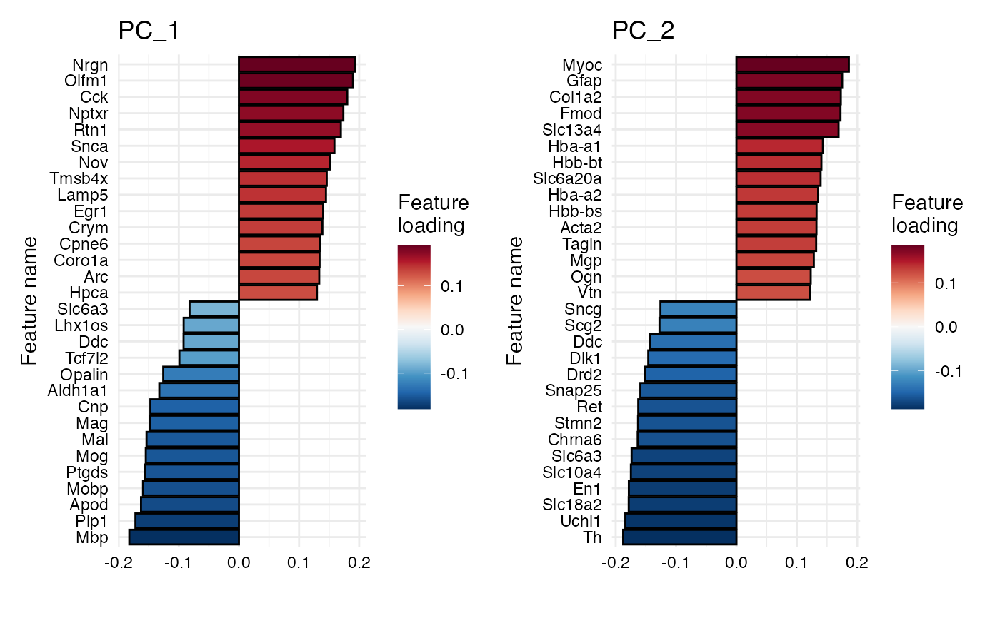

Plot feature loadings for dimensional reduction data
PlotFeatureLoadings.RdThis function can be used to visualize the relative contribution of features (e.g. genes) to dimensionality reduction vectors. The function provides three modes to draw a bar plot, a dot plot or a heatmap.
Usage
PlotFeatureLoadings(
object,
dims = 1,
reduction = "pca",
nfeatures = 30,
mode = c("dotplot", "barplot", "heatmap"),
type = c("positive", "negative", "centered"),
fill = "grey",
color = "black",
bar_width = 0.9,
pt_size = 3,
pt_stroke = 0.5,
linetype = "dashed",
color_by_loadings = FALSE,
gradient_colors = RColorBrewer::brewer.pal(n = 9, name = "Reds"),
ncols = NULL
)Arguments
- object
An object of class
Seurat- dims
An integer vector of dimensions to plot feature loadings for
- reduction
A character specifying the dimensionality reduction to use
- nfeatures
Number of features to show
- mode
Plot mode. One of "barplot", "dotplot" or "heatmap"
- type
Mode used to select features:
"positive" : select features with highest loadings
"negative" : select features with lowest loadings
"centered" : split selection of features to include top and bottom loadings
- fill
Fill color for barplot and dotplot
- color
Border color for barplot and dotplot
- bar_width
With of barplot provided as a proportion
- pt_size
Size of points in dotplot
- pt_stroke
Width of border for points in dotplot
- linetype
Select a line type to be used for dotplot, e.g. "solid", "longdash" or "blank"
- color_by_loadings
Should the fill color of barplot or points reflect the feature loadings?
- gradient_colors
Colors to use for gradient if
color_by_loadings=TRUE- ncols
Number of columns used for final patchwork
Select type
For centered dimensionality reduction vectors, such as principal components,
it is best to select features with the highest and lowest loadings. For other types
of dimensionality reduction results, it is likely better to only select the features with
the highest loadings, in which case type="positive" is the appropriate choice.
Select mode
barplots or dotplots can be used to get detailed information about the loadings
for individual factors whereas heatmap is useful to summarize the loadings for
multiple factors. The heatmap option will override the type options and only
select the top features. With the heatmap mode, the values data will also be scaled
within each dimensionality reduction vectors to range between 0 and 1.
Examples
{
library(semla)
se_mbrain <- readRDS(system.file("extdata/mousebrain", "se_mbrain", package = "semla"))
# Run PCA
se_mbrain <- se_mbrain |>
ScaleData() |>
RunPCA()
# Plot feature loadings for PC_1 as a dotplot
PlotFeatureLoadings(se_mbrain, reduction = "pca", dims = 1,
mode = "dotplot", type = "centered")
# Plot feature loadings for PC_1 and PC_2 as barplots
PlotFeatureLoadings(se_mbrain, reduction = "pca", dims = 1:2,
mode = "barplot", type = "centered")
# Plot feature loadings for PC_1 and color bars by loading
PlotFeatureLoadings(se_mbrain, reduction = "pca", dims = 1:2,
mode = "barplot", type = "centered",
color_by_loadings = TRUE,
gradient_colors = RColorBrewer::brewer.pal(n = 11, name = "RdBu") |> rev())
}
#> Centering and scaling data matrix
#> PC_ 1
#> Positive: Nrgn, Olfm1, Cck, Nptxr, Rtn1, Snca, Nov, Tmsb4x, Lamp5, Egr1
#> Crym, Cpne6, Coro1a, Arc, Hpca, Sst, Nr4a1, Npy, Chgb, Neurod6
#> Snap25, Myh7, Uchl1, Eef1a2, Cort, Grp, Stmn2, Rprm, Spink8, Mfge8
#> Negative: Mbp, Plp1, Apod, Mobp, Ptgds, Mog, Mal, Mag, Cnp, Aldh1a1
#> Opalin, Tcf7l2, Ddc, Lhx1os, Slc6a3, Ret, Th, Slc18a2, Sncg, Drd2
#> Chrna6, Slc10a4, Spp1, En1, Dlk1, Calb2, Hbb-bs, Pvalb, Col1a2, Tnnt1
#> PC_ 2
#> Positive: Myoc, Gfap, Col1a2, Fmod, Slc13a4, Hba-a1, Hbb-bt, Slc6a20a, Hba-a2, Hbb-bs
#> Acta2, Tagln, Mgp, Ogn, Vtn, H2-Aa, Lyz2, Cd74, Myl9, Dcn
#> Myh11, Ptgds, Cytl1, H2-Eb1, Hmgcs2, Clu, Mfge8, Emp1, Npy, Cnn1
#> Negative: Th, Uchl1, Slc18a2, En1, Slc10a4, Slc6a3, Chrna6, Stmn2, Ret, Snap25
#> Drd2, Dlk1, Ddc, Scg2, Sncg, Eef1a2, Rtn1, Chga, Pcp4, Calb2
#> Mobp, Mbp, Chgb, Fabp5, Plp1, Pvalb, Mog, Mal, Mag, Snca
#> PC_ 3
#> Positive: Trbc2, Arc, Egr1, Myl4, Nr4a1, Mbp, Mobp, Pvalb, Plp1, Opalin
#> Mog, Mal, Cnp, Mag, Snap25, Lamp5, Ighm, Tcf7l2, Cplx3, Tgm3
#> Ighg2c, Pcp4, Hpca, Ly6d, Eef1a2, Tnnt1, Chga, Neurod6, Prph, Ctgf
#> Negative: Nnat, Slc18a2, Dlk1, Slc6a3, Slc10a4, En1, Th, Chrna6, Dcn, Sncg
#> Cpne7, Drd2, Ddc, Ret, Hpcal1, Ecel1, Cpne6, Col1a2, Trh, Calb2
#> Cd24a, Fmod, Mgp, Snca, Lypd1, Slc13a4, Fibcd1, Crym, Spink8, Slc6a20a
#> PC_ 4
#> Positive: Nr4a1, Arc, Lamp5, Egr1, Myl4, Trbc2, Chrna6, Tagln, En1, Snap25
#> Th, Slc18a2, Acta2, Col1a2, Myh11, Fmod, Hba-a2, Slc10a4, Slc6a3, Slc13a4
#> Ret, Tgm3, Hbb-bt, Slc6a20a, Ighm, Hbb-bs, Hba-a1, Vtn, Mgp, Drd2
#> Negative: Spink8, Fibcd1, Tmsb4x, Nnat, Lefty1, Crym, Cpne7, Nos1, Dcn, Cpne6
#> Grp, Homer3, Htr3a, Tac1, Fabp5, C1ql2, Trh, Opalin, Mog, Plp1
#> Mag, Calb2, Ecel1, Gfap, Cnp, Tcf7l2, Lypd1, Vgll3, Hpcal1, Mal
#> PC_ 5
#> Positive: Pcp4, Tcf7l2, Snap25, Uchl1, Eef1a2, Chga, Stmn2, Lhx1os, Calb2, Scg2
#> Fabp5, Bok, Prkcd, Pvalb, Cartpt, Chgb, Tnnt1, Gpx3, Slc20a1, Rtn1
#> C1ql2, Spp1, Hpcal1, Ptgds, Pitx2, Lypd1, Aldh1a1, Ecel1, Vtn, Nme7
#> Negative: En1, Chrna6, Th, Slc18a2, Slc10a4, Ddc, Lefty1, Arc, Slc6a3, Neurod6
#> Grp, Nov, Lamp5, Fibcd1, Nr4a1, Drd2, Spink8, Vip, Myl4, Ret
#> Egr1, Dlk1, Nrgn, Gfap, Trbc2, Tgm3, Myh7, Tac2, Sncg, Npy
